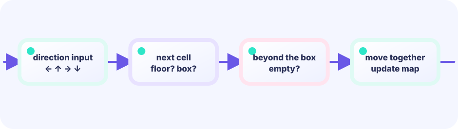

String-based stage
The level is a []string where each character encodes one tile. Looking at the source is like looking at the map itself.
var level = []string{…}★★★★☆ / PLAYABLE
Design stages as a string array where # is a wall, $ a box, . a goal, and @ the player. Parse once at startup, then manage everything in tile coordinates.
On screen you see original hero Ebi Tenjiroh; hits still use simple shapes. Movement math still lives in the same LEVEL 01 state boundary.
PLAYABLE / WEBASSEMBLY
Arrow keys or WASD to move. Walk into a box to push it. Z or Backspace to undo, R to reset.
FIRST-TIME READER
Find where this one line is used, then follow how its value changes on screen. This is the shared game-state boundary: add rules in Update, then choose an independent presentation in Draw. The numbered steps below add one system at a time.
ONE RULE TO TRACE
Match the explanation to this line, then test the change in the game.
if moving { progress++; return nil }A map made of symbols
Put one row of cells in each string. You can see walls and boxes at a glance, then convert each character into tile data when the game starts.
# wall @ player $ box . goal ######## #@ $. # ########


DEEP DIVE / TILE MAP
With a tile map. The stage is a slice of strings. At startup the code reads every character, decides what each tile contains, and fills the game structs. Rendering later reads those structs back and draws each tile. Stage design and game logic stay completely separate.
| Symbol | Meaning | Job in the game |
|---|---|---|
# | Wall | A cell you cannot enter |
@ | Player | Starting position |
$ | Box | The object you push |
. | Goal | Where a box belongs |
For example, tile (2,3) is drawn at (2×48, 3×48) = (96,144) because each tile is 48 pixels wide and tall.
The level is a []string where each character encodes one tile. Looking at the source is like looking at the map itself.
var level = []string{…}Think of "which grid cell" and "which pixel on screen" as two different numbers. Grid cell (2,3) maps to pixel position (2*48, 3*48) = (96,144). Collision always checks the grid cell; while moving, only progress (0→1) slides the pixel position on screen. Commit the logical tile when progress hits 1.
if moving { progress += …; return }Picture writing one note per move and stacking it on top of the pile. Undo takes the top note off the pile and restores that state. Before any move, the code actually saves the player and box positions as a snapshot with append([]point(nil), boxes...), which copies the slice — assigning boxes: g.boxes would share the backing array and corrupt the whole stack of notes later.
append([]point(nil), boxes...)TRY IT / LAB
P is the player, B the crate. Moving right pushes only if the far cell is empty.
A slow-motion model of the real game rule.
TRY IT · GO
next := ahead(player, dir) if next == Box && ahead(box, dir) == Empty { push } if next == Wall { /* stay */ }
—
THE PARSE RECIPE
for y, row := range levelinnerfor x, c := range rowThe outer loop provides the row (y coordinate) and the inner loop provides the column (x coordinate). A switch on character c fills walls, boxes, goals, and the player start.
Walls live in map[point]bool — one lookup walls[p] answers “is this tile a wall?” Sparse walls fit a map better than a huge 2D array.
IN THE REAL GAME
On a keypress, do not rewrite the tile yet. Store from/to and set moving=true. While sliding, Update ignores new moves and only advances progress; Draw lerps the sprite. When progress hits 1, commit the logical tile and accept input again.
if g.moving {
g.progress += 0.14
if g.progress >= 1 {
g.player = g.toPlayer // commit tile only now
g.moving = false
}
return // ignore input mid-slide
}
if d, ok := readMove(); ok {
g.fromPlayer, g.toPlayer = g.player, next
g.moving, g.progress = true, 0
}
// Draw uses the lerp, not the logical tile alone
x = lerp(from.x, to.x, progress)TODAY — look here first
The code below is the game's main logic (the hero art loads from shared package internal/hero). Copy it to your editor — but first follow the three “look here first” points above.
Note: inline comments in this full listing are in Japanese for young learners. The English teaching snippets above are your guide.
package main
import (
"fmt"
"image/color"
"github.com/hajimehoshi/ebiten/v2"
"github.com/hajimehoshi/ebiten/v2/ebitenutil"
"github.com/hajimehoshi/ebiten/v2/inpututil"
"github.com/hajimehoshi/ebiten/v2/vector"
"github.com/kumagi/EbiShowcase/internal/hero"
"github.com/kumagi/EbiShowcase/internal/lessonlogic"
)
const (
screenWidth = 480
screenHeight = 720
tileSize = 48
)
type point struct {
x, y int
}
// 1手戻すための記録
type snapshot struct {
player point
boxes []point
}
type game struct {
player point
boxes []point
goals []point
walls map[point]bool
history []snapshot
moves int
cleared bool
// Mid-tile slide: while moving, Update advances progress and ignores new input.
moving bool
progress float64
fromPlayer, toPlayer point
boxIndex int // -1 = player only
fromBox, toBox point
}
// # = 壁, @ = プレイヤー, $ = 箱, . = ゴール
var level = []string{
"##########",
"# #",
"# . . #",
"# $ $ #",
"# ## #",
"# @ #",
"# #",
"# #",
"##########",
}
func newGame() *game {
g := &game{walls: map[point]bool{}, boxIndex: -1}
for y, row := range level {
for x, c := range row {
p := point{x, y}
switch c {
case '#':
g.walls[p] = true
case '@':
g.player = p
case '$':
g.boxes = append(g.boxes, p)
case '.':
g.goals = append(g.goals, p)
}
}
}
return g
}
func abs(v int) int {
if v < 0 {
return -v
}
return v
}
func justPressedPosition() (x, y int, ok bool) {
if inpututil.IsMouseButtonJustPressed(ebiten.MouseButtonLeft) {
x, y = ebiten.CursorPosition()
return x, y, true
}
ids := inpututil.AppendJustPressedTouchIDs(nil)
if len(ids) > 0 {
x, y = ebiten.TouchPosition(ids[0])
return x, y, true
}
return 0, 0, false
}
func restartPressed() bool {
if inpututil.IsKeyJustPressed(ebiten.KeySpace) {
return true
}
if inpututil.IsMouseButtonJustPressed(ebiten.MouseButtonLeft) {
return true
}
if len(inpututil.AppendJustPressedTouchIDs(nil)) > 0 {
return true
}
return false
}
func (g *game) boxAt(p point) int {
for i, b := range g.boxes {
if b == p {
return i
}
}
return -1
}
func (g *game) isGoal(p point) bool {
for _, goal := range g.goals {
if goal == p {
return true
}
}
return false
}
func (g *game) save() {
boxes := append([]point(nil), g.boxes...)
g.history = append(g.history, snapshot{player: g.player, boxes: boxes})
}
func (g *game) undo() {
if len(g.history) == 0 || g.cleared {
return
}
last := g.history[len(g.history)-1]
g.history = g.history[:len(g.history)-1]
g.player = last.player
g.boxes = append([]point(nil), last.boxes...)
if g.moves > 0 {
g.moves--
}
}
func (g *game) checkCleared() {
g.cleared = true
for _, goal := range g.goals {
if g.boxAt(goal) < 0 {
g.cleared = false
return
}
}
}
// Start a one-tile slide. Logical tile coords update only when progress reaches 1.
func (g *game) move(d point) {
if g.moving {
return
}
next := point{g.player.x + d.x, g.player.y + d.y}
if g.walls[next] {
return
}
boxIndex := g.boxAt(next)
if boxIndex >= 0 {
beyond := point{next.x + d.x, next.y + d.y}
if g.walls[beyond] || g.boxAt(beyond) >= 0 {
return // 箱の先が壁か別の箱なら押せない
}
g.save()
g.fromPlayer, g.toPlayer = g.player, next
g.boxIndex = boxIndex
g.fromBox, g.toBox = g.boxes[boxIndex], beyond
g.moving = true
g.progress = 0
g.moves++
return
}
g.save()
g.fromPlayer, g.toPlayer = g.player, next
g.boxIndex = -1
g.moving = true
g.progress = 0
g.moves++
}
func lerp(a, b, t float64) float64 {
return a + (b-a)*t
}
func (g *game) readMove() point {
d := point{}
if inpututil.IsKeyJustPressed(ebiten.KeyArrowUp) || inpututil.IsKeyJustPressed(ebiten.KeyW) {
d.y = -1
}
if inpututil.IsKeyJustPressed(ebiten.KeyArrowDown) || inpututil.IsKeyJustPressed(ebiten.KeyS) {
d.y = 1
}
if inpututil.IsKeyJustPressed(ebiten.KeyArrowLeft) || inpututil.IsKeyJustPressed(ebiten.KeyA) {
d.x = -1
}
if inpututil.IsKeyJustPressed(ebiten.KeyArrowRight) || inpututil.IsKeyJustPressed(ebiten.KeyD) {
d.x = 1
}
// 画面中央からのタッチ方向
if x, y, ok := justPressedPosition(); ok {
cx, cy := screenWidth/2, screenHeight/2
dx, dy := x-cx, y-cy
if abs(dx) > abs(dy) {
if dx < 0 {
d.x = -1
} else {
d.x = 1
}
} else {
if dy < 0 {
d.y = -1
} else {
d.y = 1
}
}
}
return d
}
// --- ここから Update ---
func (g *game) Update() error {
if inpututil.IsKeyJustPressed(ebiten.KeyR) {
*g = *newGame()
return nil
}
if !g.moving && (inpututil.IsKeyJustPressed(ebiten.KeyZ) || inpututil.IsKeyJustPressed(ebiten.KeyBackspace)) {
g.undo()
return nil
}
if g.cleared {
if restartPressed() {
*g = *newGame()
}
return nil
}
// While sliding between tiles, advance the tween and ignore move input.
if g.moving {
var complete bool
g.progress, complete = lessonlogic.AdvanceTween(g.progress, 0.14)
if complete {
g.player = g.toPlayer
if g.boxIndex >= 0 {
g.boxes[g.boxIndex] = g.toBox
}
g.moving = false
g.progress = 0
g.checkCleared()
}
return nil
}
d := g.readMove()
if d.x != 0 || d.y != 0 {
g.move(d)
}
return nil
}
// --- ここから Draw ---
func (g *game) Draw(screen *ebiten.Image) {
screen.Fill(color.RGBA{7, 19, 35, 255})
offsetY := 105
for y := range level {
for x := range level[y] {
p := point{x, y}
px := float32(x * tileSize)
py := float32(offsetY + y*tileSize)
floor := color.RGBA{24, 47, 65, 255}
if (x+y)%2 == 0 {
floor = color.RGBA{27, 53, 72, 255}
}
vector.DrawFilledRect(screen, px, py, tileSize, tileSize, floor, false)
if g.walls[p] {
vector.DrawFilledRect(screen, px+2, py+2, tileSize-4, tileSize-4, color.RGBA{74, 94, 119, 255}, false)
vector.StrokeRect(screen, px+5, py+5, tileSize-10, tileSize-10, 2, color.RGBA{117, 146, 174, 255}, false)
}
if g.isGoal(p) {
vector.DrawFilledCircle(screen, px+tileSize/2, py+tileSize/2, 10, color.RGBA{255, 211, 76, 255}, false)
vector.StrokeCircle(screen, px+tileSize/2, py+tileSize/2, 16, 2, color.RGBA{255, 211, 76, 170}, false)
}
}
}
for i, b := range g.boxes {
bx, by := float64(b.x), float64(b.y)
if g.moving && i == g.boxIndex {
bx = lerp(float64(g.fromBox.x), float64(g.toBox.x), g.progress)
by = lerp(float64(g.fromBox.y), float64(g.toBox.y), g.progress)
}
px := float32(bx * tileSize)
py := float32(float64(offsetY) + by*tileSize)
c := color.RGBA{224, 130, 64, 255}
goalTile := point{int(bx + 0.5), int(by + 0.5)}
if g.isGoal(goalTile) {
c = color.RGBA{50, 210, 151, 255}
}
vector.DrawFilledRect(screen, px+7, py+7, tileSize-14, tileSize-14, c, false)
vector.StrokeRect(screen, px+12, py+12, tileSize-24, tileSize-24, 3, color.RGBA{255, 234, 190, 210}, false)
}
pxTile, pyTile := float64(g.player.x), float64(g.player.y)
if g.moving {
pxTile = lerp(float64(g.fromPlayer.x), float64(g.toPlayer.x), g.progress)
pyTile = lerp(float64(g.fromPlayer.y), float64(g.toPlayer.y), g.progress)
}
px := float32(pxTile*tileSize + tileSize/2)
py := float32(float64(offsetY) + pyTile*tileSize + tileSize/2)
hero.DrawCentered(screen, float64(px), float64(py), float64(tileSize)-4)
ebitenutil.DebugPrintAt(screen, "SOKOBAN — PUT EVERY BOX ON A GOLD GOAL", 86, 28)
ebitenutil.DebugPrintAt(screen, fmt.Sprintf("MOVES %03d", g.moves), 20, 72)
ebitenutil.DebugPrintAt(screen, "UNDO: Z / BACKSPACE RESET: R", 205, 72)
if g.cleared {
vector.DrawFilledRect(screen, 55, 286, 370, 140, color.RGBA{4, 16, 31, 240}, false)
ebitenutil.DebugPrintAt(screen, "STAGE CLEAR!\n\nTAP / SPACE TO PLAY AGAIN", 145, 330)
} else {
ebitenutil.DebugPrintAt(screen, "ARROWS / WASD / TAP A DIRECTION", 126, 675)
}
}
func (g *game) Layout(_, _ int) (int, int) {
return screenWidth, screenHeight
}
func main() {
ebiten.SetWindowSize(screenWidth, screenHeight)
ebiten.SetWindowTitle("Sokoban — Ebitengine")
if err := ebiten.RunGame(newGame()); err != nil {
panic(err)
}
}
BUILD IT LINE BY LINE / UPDATE WORKSHOP
Reset, undo, cleared, animation, next input: Sokoban narrows what is currently legal from top to bottom.
Some braces intentionally stay open between pieces, so intermediate code may not compile yet. Each card explains what to paste, why it belongs here, and which Go feature helps. The snippets are extracted from the running game; after the final paste, Update exactly matches the real one.
R always resets; undo works only while still; cleared accepts restart only. Each returns so one tick cannot mix commands.
func (g *game) Update() error {
if inpututil.IsKeyJustPressed(ebiten.KeyR) {
*g = *newGame()
return nil
}
if !g.moving && (inpututil.IsKeyJustPressed(ebiten.KeyZ) || inpututil.IsKeyJustPressed(ebiten.KeyBackspace)) {
g.undo()
return nil
}
if g.cleared {
if restartPressed() {
*g = *newGame()
}
return nil
}moving advances progress and commits logical player/box positions only on completion. New movement input is ignored until then.
// While sliding between tiles, advance the tween and ignore move input.
if g.moving {
var complete bool
g.progress, complete = lessonlogic.AdvanceTween(g.progress, 0.14)
if complete {
g.player = g.toPlayer
if g.boxIndex >= 0 {
g.boxes[g.boxIndex] = g.toBox
}
g.moving = false
g.progress = 0
g.checkCleared()
}
return nil
}A nonzero direction goes to move, which checks walls and boxes before starting a transition.
d := g.readMove()
if d.x != 0 || d.y != 0 {
g.move(d)
}
return nil
}Update owns only input and advancing game state. Replace Draw with another presentation and the controls, timing, collisions, and outcomes assembled here remain unchanged.
WITHOUT A TILE MAP
Hardcoding wall positions in pixels means touching dozens of numbers for a small layout change. Tile coordinates shrink each position to a single integer pair.
WITH A TILE MAP
You can read the level string and immediately visualize the stage. Adding a new level is writing one more string.
YOUR FIRST TUNING
Edit the level string to create a custom puzzle. Use # for walls, $ for boxes, . for goals, and @ for the player. Make sure the number of boxes equals the number of goals.
FEEDBACK